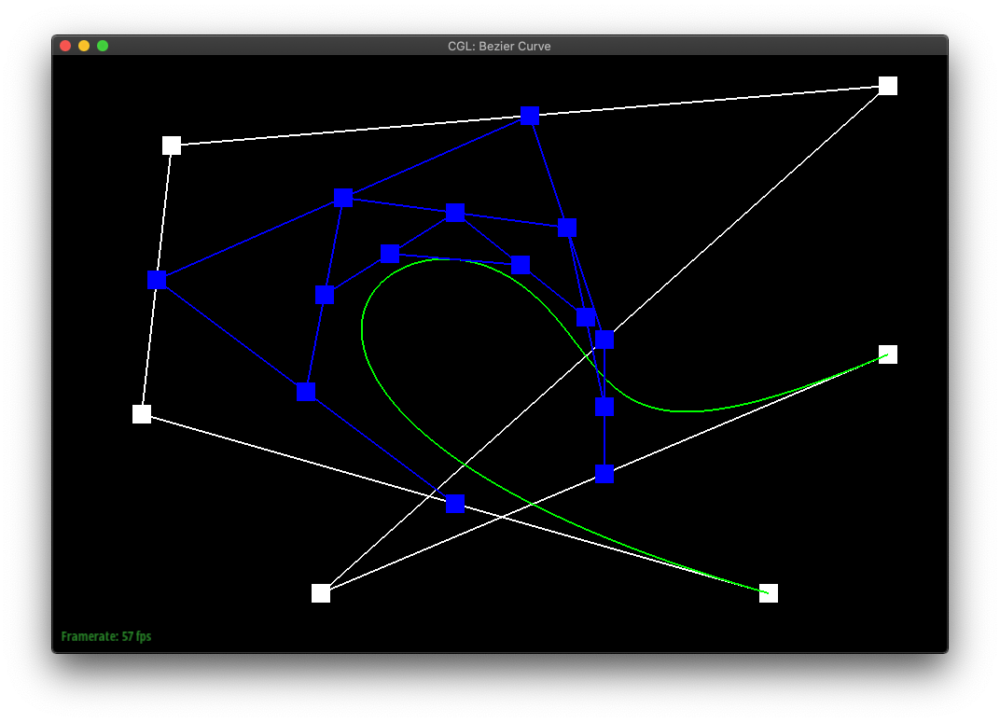
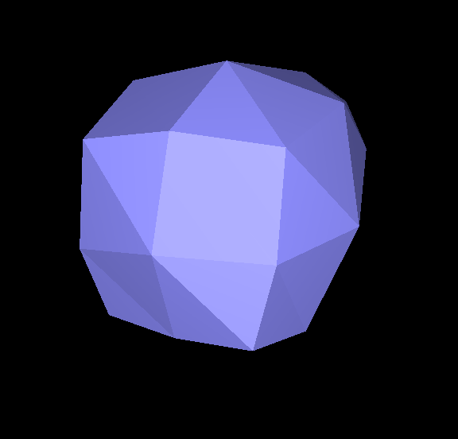

Overview
In this project, we built the technique of loop subdivision and bezier curve/surface rendering from the ground up. We learned that you can never be too careful when working with mesh elements, and that we should always assume the worst when it comes to reassigning pointers, and just reassign them all. We also explored the differences between dealing with internal vertices and boundary vertices: notably, the extra complexity involved in performing loop subdivision with boundary vertices.
This project was a really fun and interactive way of learning the basics of loop subdivision and how it actually works.
Section I: Bezier Curves and Surfaces
Part 1: Bezier curves with 1D de Casteljau subdivision
In de Casteljau's algorithm, we create a sequence of new points by lerp'ing each sequential pair of points in the original shape. The algorithm can then be repeatedly called on the set of points it returns, until only a single point is returned.
If one was to plot the final points of de Casteljau's algorithm run from all possible t-values, one would create the bezier curve of the original sequence of points.
|
|
|
|
|
|
|

|
|
|
different point locations and a different t-value. |
Part 2: Bezier surfaces with separable 1D de Casteljau subdivision
Very similarly to part 1, we are defining a point on the bezier surface by recusively lerping points on the bezier curve to a single point. The difference is that we would need to first evaluate points on the bezier curve, then use the same algorithm on these points to define a point on the bezier surface. The algorithm is as follows:
- For each set of the control points, evaluate a point parameterized by u.
- Using the newly evaluated points from step 1 as control points, evaluate a point parameterized by v, and this point will be on the Bezier surface with parameter u and v.
Below is the teapot constructed using de Casteljau's algorithm on bezier surfaces:
Section II: Sampling
Part 3: Average normals for half-edge meshes
To calculate the area weighted normals, we iterate through each of the faces around the vertex and calculate their normals via the cross product method. The first step for each face is to calculate the two vectors that forms the triangle, and we do so by subtracting the position of the vertices formaing the triangle. Next, we use the right hand rule to determine which vector comes first in the cross product. Then, we add each of these normal vectors we calculated, and normalize them.
Note that the area weighting the normals are implicitly done by the cross product calculation, since the magnitude of the cross product is simply double the area of the triangle formed by the two vectors.
Below is a comparison between the default flat shading and phong shading.
|
|
|
Part 4: Half-edge flip
To implement the edge flip operation, we simply grab every single mesh element of the two triangles the inputted edge is a part of and reassign every single pointer. The easiest way we found to keep track of every single element is to draw out the before and after of the edge flip operation, so we can make sure every elements and their internal pointers are pointed at the right thing.
Below is a comparison of edges before and after edge flippings.
|
|
|
One interesting thing that happenned while debugging is that we were running into weird behavior of degenerating triangles and hanging wireframes after random flipping of edges. We later found out after consulting piazza that these behaviors are normal when flipping edges not associated between two acute triangles. That is, some edge flips resulted with meshes that do not form two non-overlapping triangles.
Part 5: Half-edge split
Similarly to how we implement flip edges, our strategy of implementing split edge is to draw a before and after image of all the mesh elements and reassign them accordingly in our implementation. We split our implementation into three steps (as oppsed to two in flips):
- We grab every single existing mesh elements.
- We create the elements needed.
- We assign all the pointers within the elements.
Below are comparisons of the teapot mesh before and after edge split and flips.
|
|
|
|
|
Our group also went the extra length to implementing edge splitting at the boundary edges. To implement this feature, we have to enfore an abstraction in the beginning of the function. That is, we will always consider the left triangle to be the boundary face (virtual face), and the right triangle to be the internal face. This allows us to break our code into doing operations on the right triangle first, then switch to the left side if not on the boundary.
Below is a showcasing of boundary edge split using the beetle mesh.
|
|
|
Part 6: Loop subdivision for mesh upsampling
The implementation of loop subdivision is simply the following algorithm:
- We calculate the position of each of the new and old vertices and store them either in the vertices themselves or in the edge the vertices will be split on.
- We perform edge splits on all the old edges followed by flipping any edges connecting an old vertex to a new vertex.
- We update the position of each vertex with the calculated value from step 1.
One interesting thing that we ran into was that all the points are set to (0, 0, 0) after upsampling. Using the console out piping, we were able to find out that all of our math operation involving division were set to 0 inseatd of a decimal number. Therefore, we fixed it by manually adding decimals after each integer numbers.
From the figure below, we can see that upsampling makes the sharp edges rounded or they make the sharp edges more smooth. Preprocecssing can be done by pre-splitting the edges around the vertex that you want to be "pointy".
|
|
|
Upsampling using loop subdivision can result in unwanted effects as seen from the smoothing of edges above, it can also make symmetric objects nonsymmetrical. Take the cube mesh below as example--we can see that if no pre-processing is done, the upsampling of the cube becomes non-symmetric. This is due to the fact that the triangles making up each faces are not symmetric around the center or any plane that can cut the cube in half. To remedy this situation, we can pre-split the edge on each of the 6 faces of the cube, make the mesh symmetric to begin with. When upsampling it will remain as a symmetric object.
|
|

|
|
|
|
We also manage to get loop subdivision of boundary edges to work perfectly. We did some research on the common rule of calculating the new position of the boundary vertices. We found out that for old vertex, the new position should be 1/8 * (A+B) + 3/4 * V where A and B are the boundary vertices to the left and right, and V is the vertex itself. Similarly, for a brand new boundary vertex, we will simply average the position of the two vertices connected by the edge. Below is a showcase of boundary loop subdivision using the beetle mesh:

|
|
Section III: Optional Extra Credit
If you are not participating in the optional mesh competition, don't worry about this section!
Part 7: Design your own mesh!
Link to webpage: https://cal-cs184-student.github.io/sp22-project-webpages-rasterfarians/proj2/index.html